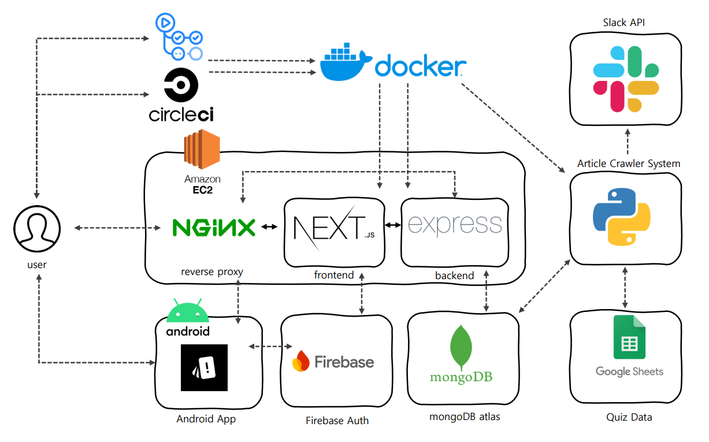
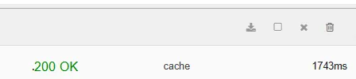
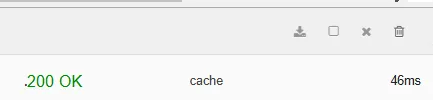
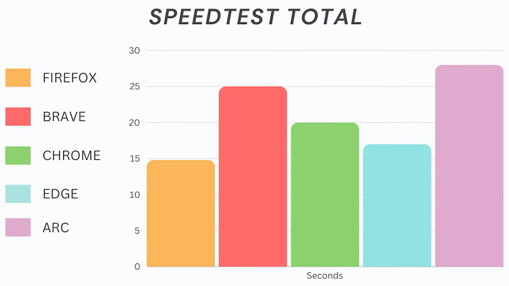
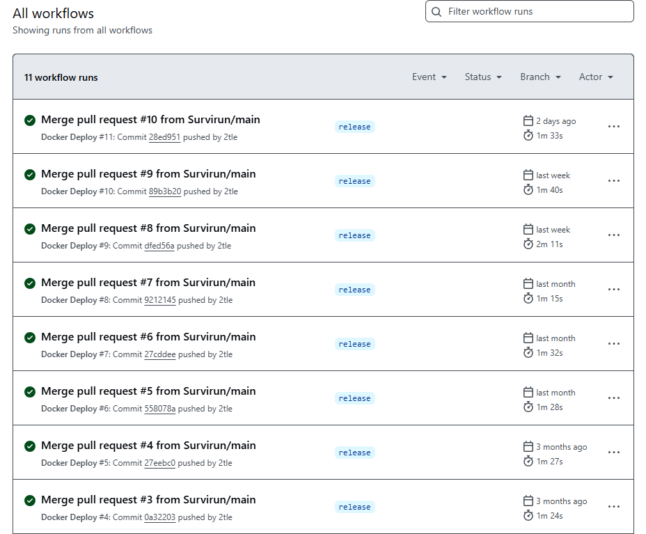
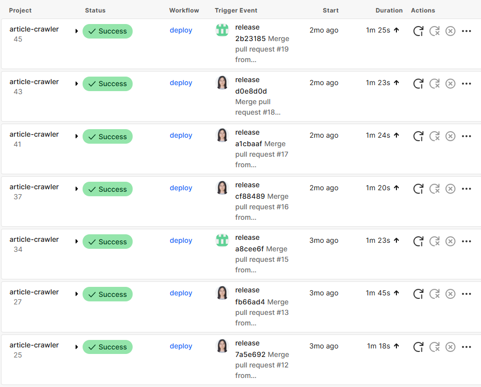
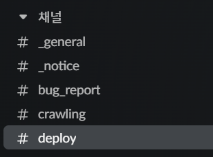
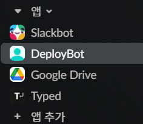
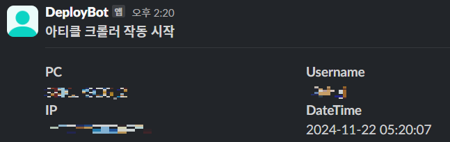
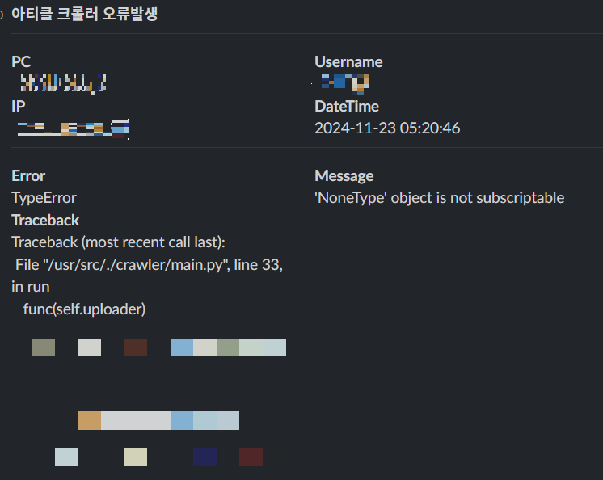

프로젝트 소개
돌핀은 IT 개발자들을 위한 아티클 큐레이션 서비스입니다. 안드로이드, iOS, 웹, 백엔드 등 여러 분야의 아티클을 모아 유저에게 맞춤형 IT 소식을 제공합니다. 당시에는 안드로이드 앱과 웹으로 베타 서비스를 운영했고, 저는 백엔드와 크롤러 개발을 담당했습니다.
기획 의도
초보 개발자는 개발 관련 정보를 어디서 찾아야 할지 알기 어렵습니다. 다양한 분야의 전문적인 글을 한 번에 확인하고, 최신 IT 기술에 대한 정보도 빠르게 찾아볼 수 있는 서비스를 만들고 싶었습니다.
구조 및 기술 스택

- 프론트엔드 → Next.js
- 모바일 앱 → Android Studio, Kotlin
- 백엔드 → TypeScript, Express
- 데이터베이스 → MongoDB, Google Sheets(퀴즈)
- 인증 서버 → Firebase Auth
- 배포 → GitHub Actions, CircleCI, Docker, AWS EC2
- 크롤링 시스템 → Python
주요 작업 내역
백엔드에서는 유저의 활동에 따라 아티클의 가중치를 조정하는 시스템을 개발했습니다. 아티클을 조회하거나 공유하거나 북마크하면 해당 글의 가중치를 높이고, 오래된 아티클일수록 가중치를 낮췄습니다. 유저에게는 가중치가 높은 아티클부터 보여주도록 했습니다.
프론트엔드와 백엔드에는 GitHub Actions로 CI/CD를 적용했고, 아티클 크롤러에는 CircleCI를 사용했습니다. 크롤러에서 함께 사용할 DB와 웹드라이버 공통 모듈도 만들었습니다.
서비스 개선 과정
서버 응답이 느리고 타임아웃이 자주 발생한다
수집된 아티클이 많아지면서 조회 API의 응답이 느려졌습니다. 아티클 목록을 한 번 조회하는 데 약 0.8 ~ 2초가 걸렸고, 북마크가 많을수록 북마크한 아티클을 가져오는 시간도 늘어났습니다. 로그인 과정에서도 타임아웃이 자주 발생했습니다.
원인으로는 두 가지를 생각했습니다.
- Mongoose의
populate가 여러 쿼리를 실행하면서 조회가 느려진 건 아닐까? - 유럽의 Heroku 서버와 서울의 MongoDB 사이의 거리 때문은 아닐까?
Mongoose 문제일 것이다.
처음에는 Mongoose를 의심했습니다. 북마크 컬렉션에 저장된 id를 바탕으로 populate를 이용해 아티클을 가져오고 있었는데, RDB의 Join과는 달리 자바스크립트 단에서 데이터를 합치는 방식이라 데이터가 많아지거나 populate가 중첩되면 느려질 수 있다고 생각했습니다.
그래서 populate 대신 aggregate를 사용해봤습니다. 하지만 차이는 0.00x초 정도로 응답속도는 거의 나아지지 않았고, 타임아웃 문제도 그대로였습니다.
Heroku 서버의 문제일 것이다.
다음으로 서버의 위치와 슬립 동작을 살펴봤습니다. Heroku는 유럽 리전, MongoDB는 한국 리전에 있어 API 요청을 보내면 데이터가 한국 → 유럽 → 한국 → 유럽 → 한국을 오가고 있었습니다.
Heroku는 약 30분 동안 요청이 없으면 슬립 상태로 전환되고, 백엔드가 다시 실행되기까지 시간이 걸렸습니다. 이 슬립 동작이 타임아웃의 원인일 것으로 추정해 백엔드를 AWS로 이전하기로 했습니다.
AWS 이전 후 테스트에서 API 응답속도가 개선됐고, 타임아웃 문제도 해결됐습니다.


아티클을 크롤링하는 속도가 매우 느리다
크롤러는 뉴스 사이트와 기술 블로그에서 아티클을 수집했습니다. 한 번 수집을 마치는 데 시간이 오래 걸렸고, 실행 중 램 사용량도 높았습니다. 코드를 살펴보니 두 가지 문제가 있었습니다.
코드가 2번 실행되고 있다.
def solution(): ... #some crawler.. print(solution()) if __name__ == "__main__": outputs = solution() print(outputs)각 사이트를 크롤링하는 개별 크롤러는
solution()함수로 정의했고, 개발 중에는 파일 아래에서 함수를 호출해 결과를 확인했습니다. 그런데 협업 중__name__ == "__main__"조건 없이 함수를 호출하는 크롤러를 발견했습니다.이 때문에 일부 크롤러는 import할 때도 함수가 실행돼 불필요한 수집이 발생하고 있었습니다. 테스트용 함수 호출 코드를 삭제해 해결했고, 같은 문제가 반복되지 않도록 팀원들에게도 원인을 공유했습니다.
각 크롤러가 무거운 크롬 웹드라이버를 따로 생성하고 있다.
각 크롤러 함수에서 크롬 웹드라이버를 새로 만들어 사용하다 보니 메모리 사용량이 급격히 증가했습니다. 메인 함수에서 웹드라이버를 한 번만 만들고, 각 크롤러에 인자로 전달하도록 바꿨습니다.

브라우저 선택 시 참고한 외부 비교 자료 브라우저를 선택할 때 참고한 웹 브라우저 비교 영상에서는 파이어폭스의 실행속도가 가장 빨랐습니다. 파이어폭스의 램 사용량은 높지만, 빠르게 작업을 끝내는 게 더 중요하다고 생각했습니다. 그래서 메인 함수에서 생성하는 드라이버를 파이어폭스 웹드라이버로 교체했습니다.
하나의 기사를 여러 카테고리에 함께 보여주고 싶다
기존 아티클 스키마는 아래와 같았습니다.
// old schema of article
"_id": ObjectId,
"link": string,
"category": number,
"date": string,
"snippet": string,
"thumbnail": string,
"title": string,
"weight": number,
...
카테고리의 타입이 number라 하나의 아티클에는 카테고리를 하나만 지정할 수 있었습니다. 하지만 수집된 글을 보니 여러 카테고리에 해당하는 아티클이 있어, 한 글을 여러 카테고리에서 함께 보여주고 싶었습니다.
NoSQL은 고정된 스키마가 없어 문서의 형태를 자유롭게 수정할 수 있습니다. 이 장점을 살려 category 필드를 categories로 바꾸고, 타입도 array<number>로 변경했습니다. 백엔드도 여러 개의 카테고리에 대응하도록 수정했습니다.
기존 문서에는 카테고리가 하나만 들어 있었기 때문에, 단일 카테고리와 다중 카테고리를 가진 문서가 섞이게 됐습니다. 이를 처리하기 위해 aggregate를 사용했습니다. category 필드가 있으면 categories 필드를 만들고 [category] 값을 넣은 뒤, project로 기존 category 필드를 결과값에서 삭제했습니다. 이미 categories 필드를 가진 문서는 그대로 유지했습니다.
크롤러에는 수집한 아티클의 카테고리를 판별하는 함수를 추가했습니다. 카테고리별로 키워드를 정해두고, 제목에 해당 키워드가 있으면 그 카테고리에 글을 포함하도록 했습니다. 이렇게 한 아티클을 관련된 여러 카테고리에서 보여줄 수 있게 됐습니다.
수동 배포가 번거롭고, 배포 환경도 나뉘어 있다
프론트엔드와 백엔드는 각 개발자의 개인 AWS 계정에 따로 배포하고 있었습니다. 두 서비스 모두 Git과 SSH로 코드를 직접 올리고 실행해야 해서, 코드를 수정할 때마다 수동 배포가 필요했습니다.
크롤러는 하루에 한 번 새 기사와 기술 블로그 글을 수집해야 했습니다. 하지만 메모리 사용량이 커서 클라우드에서 실행하기에는 비용 부담이 있었고, 직접 실행하다 보니 수집을 잊는 경우도 있었습니다.
먼저 팀 내 AWS 공용 계정을 만들고, 서비스와 크롤러의 배포 방식을 각각 바꿨습니다.
프론트엔드와 백엔드는 Docker와 GitHub Actions로 배포를 자동화하고, EC2에서 컨테이너로 실행하도록 했습니다. 두 저장소 모두 Public Repository라 GitHub Actions를 이용할 수 있었습니다. 배포 과정은 다음과 같습니다.
- GitHub Actions를 통해 소스코드를 빌드합니다.
- Docker 이미지를 빌드합니다.
- 빌드된 이미지를 Docker Hub로 push합니다.
- GitHub Actions에서 EC2 컨테이너로 접속합니다.
- Docker Hub에 있는 이미지를 pull해 서비스를 실행합니다.
아티클 크롤러는 저전력 컴퓨터를 구입해 실행했습니다. 32GB의 램을 장착하고 Rocky Linux를 설치했는데, 학교 보안정책상 외부에서 이 컴퓨터로 접속할 수 없었습니다.
그래서 CircleCI로 아티클 크롤러를 빌드해 Docker Hub까지만 올리고, 컴퓨터에서 이미지를 pull하기로 했습니다. 컴퓨터에는
Crontab을 설정해 매일 2시에 이미지를 pull하고 크롤러를 돌렸습니다.


이후에는 개발자가 작업한 내용을 Repository의 main 브랜치에 push하고, develop ← main Pull Request를 열어 merge하면 GitHub Actions와 CircleCI에서 코드 빌드, Docker 이미지 생성, 배포를 진행했습니다. 코드를 수정할 때마다 수동으로 배포할 필요가 없어졌습니다.
아티클 크롤링 현황을 알 수 없다
처음에는 크롤러가 시작됐는지, 수집에 성공했는지 실패했는지 알 수 없었습니다. 수집 대상 사이트에 문제가 생겨도 원인을 확인하기 어려웠고, 아티클 수집이 2주 넘게 멈췄는데도 팀에서 알아채지 못한 적이 있었습니다. 크롤러 서버는 외부 접속이 막혀 있어 SSH로 로그를 확인할 수도 없었습니다.
팀 메신저로 슬랙을 쓰고 있어서, 슬랙봇을 만들고 로그를 보낼 채널을 생성했습니다.


크롤러가 시작되거나 종료될 때 DeployBot을 통해 #deploy 채널에 로그를 보내도록 했습니다. 실행 중 오류가 나면 에러 로그도 같은 채널로 보내게 했습니다.


이후에는 매일 수집이 시작될 때 슬랙에서 알림을 받을 수 있었습니다. 팀원들도 슬랙에서 오류를 확인하고 해당 크롤러를 수정할 수 있게 됐습니다.